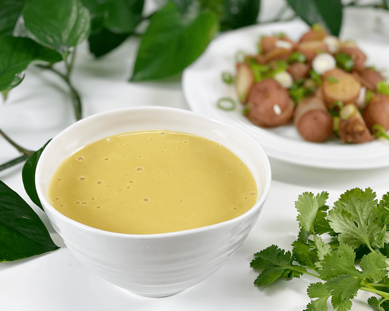
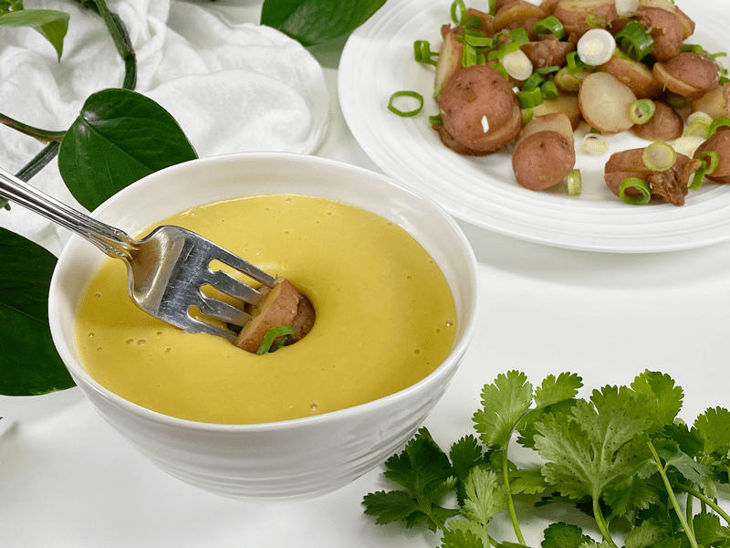

Cheese Sauce | Potato-Based | Oil-Free
One of the interesting aspects of creating recipes is that it doesn’t matter what ingredients I use, I will always have a person allergic to something that I am using. Once a recipe is released, I get comments or emails asking for substitutions. And that is A-OK in my book, as it’s a learning opportunity for all involved. When it comes to making a cheese sauce, you have to look at what ingredients fit into your diet. Since we are vegan here, we omit the dairy aspect…milk.

Typical Ingredient Options
Tofu Option
Without milk, most vegans turn to soy (tofu), but tofu is one of those foods that sparks debate. Most of the world’s soybeans are currently grown in the US, and a considerable proportion is genetically modified (GMO). So, please be sure to purchase organic, non-GMO tofu if you use this ingredient. People who are estrogen-sensitive or have thyroid issues are often instructed to avoid all soy products. So, where do we go from there?
Coconut Option
Coconut milk or the flesh of young Thai coconut is another base option when making vegan cheese, but coconut’s high fat content may make it undesirable for some people who are watching their fat intake. Plus there are those who just can’t handle the taste or perhaps can’t eat coconut products for health reasons.
Cashews/Nuts Option
As raw foodies, we use soaked cashews (nuts) in place of the milk and creams. I have an amazing recipe on the site for my Touchdown Cheese Sauce, which uses cashews, and it has been a staple for all the festivities that we hold in our house. But I get emails from those who can’t enjoy cashews for various reasons, so we must look for yet another replacement. Seeds can be used, but they are a weak replacement if you are genuinely looking for an authentic creamy, cheesy taste.
I have made recipes using the above ingredients, but I wanted yet another base option for my cheesy creations, so I decided to dabble with the almighty potato!

Potato: The Base for This Recipe
For today’s recipe, I decided to use cooked white potatoes as the base for this cheese, and I must say, it didn’t disappoint! It’s creamy, thick, and has a pretty darn good cheesy taste to it. Using potatoes when making vegan cheese sauces isn’t something new–there are many recipes out there in Google-land–but I decided to use my cashew-based cheese sauce, replacing the cashews with cooked potato and adjusting the seasoning just a tad. The result? Pleasantly cheesy delicious!
Choosing the Right Potato
There are many types of potatoes to choose from, and it’s essential to use the right one to get the job done correctly. Potatoes grown in heavily fertilized soil may contain high levels of heavy-metal contamination, so be sure to use organic ones! Potatoes fall into three important categories that impact the outcome of your dish: starchy, waxy, and all-purpose. For this recipe, I used yellow potatoes, like a Yukon
Starchy Potatoes
- These potatoes are high in starch and low in moisture.
- They’re fluffy, making them great for boiling, steaming, baking, and frying.
- Examples include Idaho russet and Katahdin potatoes.
- Idaho russet potatoes are russet-skinned with white flesh. They have a neutral potato flavor and a fluffy, creamy, and soft texture. They’re also very absorbent. Don’t use for potato salads, gratins, or any dish that requires the potatoes to hold their shape.
- Katahdin potatoes are your French fry potatoes. They have smooth skin with yellowish flesh and a classic potato flavor. They’re fluffy, creamy, smooth, and soft. Avoid using in potato salads, gratin potatoes, or any dish that requires the potatoes to hold their shape.
Waxy Potatoes
- These have a low starch content and are often characterized by a creamy, firm, and moist flesh that holds its shape well after cooking.
- They’re typically great for boiling, roasting, soups, stews, casseroles, and potato salads.
- Examples include Red Bliss, new potatoes, red-skinned, Adirondack Blue, and fingerling potatoes.
- Red Bliss potatoes have bright red skin with creamy white flesh. They’re slightly bitter and have a firm, moist and waxy texture. They are the worst for mashing.
- New potatoes are defined as any type of potato that’s harvested young before its sugars have fully converted to starch. They’re small and round with thin skin, and depending on the type, they may vary in color. They’re sweet, firm, creamy, and very waxy. Don’t use them for baking.
- Adirondack Blue potatoes have purple skin and bright blue-purple flesh that fades to a shade of blue when mashed and deepens in shade when roasted. They have an earthy, rich, and nutty flavor and a firm, creamy, and apple-like texture.
- Fingerlings are two to three inches long. They have yellow skin and light yellow flesh. Their flavor is mild, nutty, and earthy, and their texture firm and moist.
All-Purpose Potatoes:
- These potatoes have a medium starch content that falls somewhere in between the starchy and waxy potatoes.
- They’re a true multi-purpose potato, and therefore can be used for just about any cooking application.
- Good for roasting, mashing or baking.
- Examples include Yukon Gold and Purple Peruvian potatoes.
- Yukon Gold potatoes have finely flaked yellowish-white skin with light yellow flesh. They’re slightly sweet, with a smooth, slightly waxy texture and moist flesh.
- Purple Peruvian potatoes have deep purple skin and flesh. The flesh is either uniform throughout or marbled with white and deep, inky purple. They’re earthy and slightly nutty, with an almost buttery aftertaste.
What to Look for in a Potato
Select potatoes that are firm, unbruised, and relatively smooth and round. Avoid any that show signs of decay, including wet or dry rot, any roots, or potatoes with a greenish hue as they have been exposed to light and have a bitter taste. It is best to buy potatoes that are unpackaged and unwashed, to avoid bacterial buildup. To learn how to properly store them, click (here).
As of late, this cheese sauce has been a staple in our kitchen. I keep it in a squeeze bottle and squirt it all over my veggies. I even enjoy it chilled. I hope you enjoy this amazing creamy cheese sauce. Please be sure to leave a comment below. Blessings, amie sue
 Ingredients:
Ingredients:
- 3 cups peeled diced potato, steamed
- 1/4 cup lemon juice
- 1/2 cup water
- 1 large yellow bell pepper
- 1/2 cup nutritional yeast
- 1/2 -1 tsp crushed red pepper (optional)
- 1 Tbsp onion powder
- 1 tsp garlic powder
- 1 tsp Himalayan pink salt
- 1/2 tsp cumin
Preparation:
Cooking the Potatoes
Option 1 -Steam Method | Stove Top
- Scrub, peel, and cut the potatoes into uniform-sized pieces (so they cook evenly).
- Add about one inch of water to a large pot and bring to a boil.
- Once the water comes to a boil, place potatoes into the steamer basket and put it into the pot. Sprinkle the potatoes with the salt and cover.
- Turn the heat to medium and let steam until fork-tender, roughly 20 to 30 minutes. The potatoes must be fully cooked, or else you will have lumpy potatoes.
- Using a slotted spoon or a strainer, transfer the cooked potatoes to a glass or metal mixing bowl.
Option 2 – Steam Method | Instant Pot
- Wash and peel the potatoes, dice in uniform sizes (so they cook evening).
- Add 2 cups of water to the Instant Pot, and place the loaded steam basket inside.
- You don’t want the potatoes sitting in too much water. If using a 6-quart unit, only use 1 cup of water.
-
Attach and secure the lid and turn the pressure valve to the “Sealing” position.
-
Press “Manual,” place on high pressure, and adjust the cooking time for 7 minutes.
-
When machine beeps, do a quick release by turning the valve to the “Venting” position. Be very careful of the steam coming shooting out of the valve.
Assembly of Recipe
- In a high-powered blender combine, the cooked potato, lemon juice, water, bell pepper, nutritional yeast, pepper, onion, garlic, salt, and cumin. Blend until creamy.
- Nutritional yeast is a deactivated yeast with a natural cheesy flavor; do not omit.
- You can also use red bell pepper if you don’t have yellow. It will alter the color but nothing else.
- Store in the fridge in an airtight sealed container for up to 5 days.
© AmieSue.com